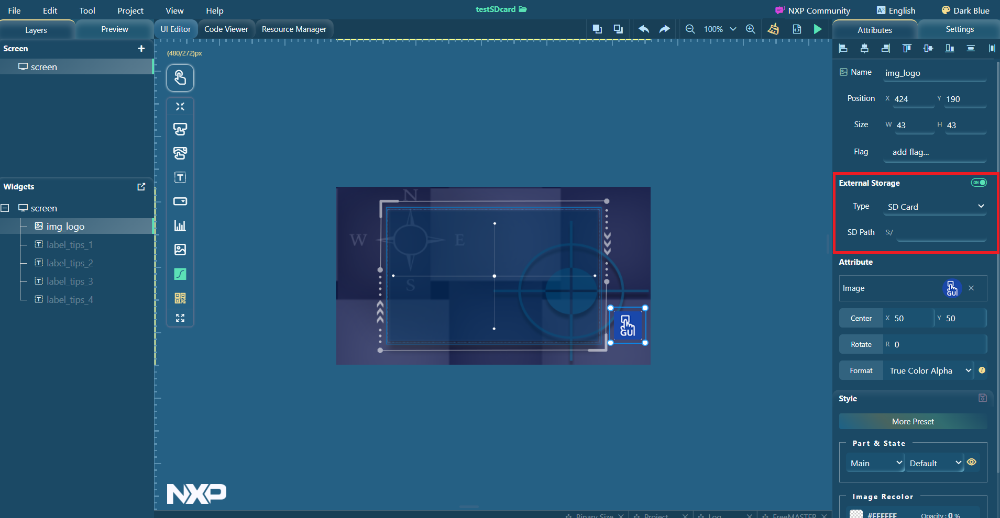

SD card
This chapter describes how to invoke the SD card.
Image
The images (BIN, BMP, JPG, PNG) can be stored on an SD card and used by image-related widgets (imgbtn, image, Aimg, 3Dimg). The images are decoded in runtime.
The JPG (SJPG) format image cannot be zoomed and rotated when using external storage to runtime decode. If necessary, use a PNG image instead.
Prerequisites
Connect the supported device to the host by a USB cable.
Project template
There is an application template for supported boards. The usage tips are displayed on the screen.
- Create a project by selecting one supported board and the "SDcardStorage" application template.
Figure: Create a project 
- The image files are located in the import folder.
Figure: Import folder 
- The SD card storage can be enabled in the attribute setting window of image-related widgets.
Figure: Attribute setting window 
Copy the images into the SD card of the MCU device. If SD card storage is enabled, keep the SD path the same as the actual file folder on SD.
Customized project
When using image-related widgets, follow the steps to store images on the SD card.
- Drag and drop the widget into the editor and set the attributes.
- Open project folder > import. Confirm one or more image files that you want to save in SD, and copy those images to the SD card of the MCU device.Note: All image files of Aimg and 3Dimg must be in the same folder on the SD card.
- Enable "External Storage" in the attributes setting window, and input the absolute path of the folder that includes one or more images.
- Insert SD card to MCU device. To deploy the application on the board, click Run > Target.
Video
The format of the input video must be *.h264. The demo application implements video play on NXP MCU by using the LVGL library.
Prerequisites
- MCUXpresso 11.8.0/IAR 9.40.1/Keil MDK 5.38
- Connect the supported device to the host by a USB cable.
Prepare H264 file
To prepare an H264 video file, perform the following steps:
- Install FFmpeg on your host.
- Use the following command to convert the *.mp4 video file to an *.h264 video file.
$ ffmpeg -i input.mp4 -vf scale=480:272 -c h264 output.h264 - To get the best play effect, make the scale identical to the expected size in the GUI application.
- Load the *.h264 video on the SD card of the MCU device.
Create project with video player demo template
To create a project with the video player demo template, perform the following steps:- Go into the import folder and locate the
demo.h264file.Figure: Locate demo.h264 file 
- Replace the
demo.h264file from the SD card of the MCU device with the *.h264 file generated by yourself. - To load the code into your device, click Run > Target > MCUXpresso. After finishing, you can play this demo video on display.
Customize project
The name and path of the *.h264 video file can be changed in custom.c. Different variables are used to set the simulator and target.